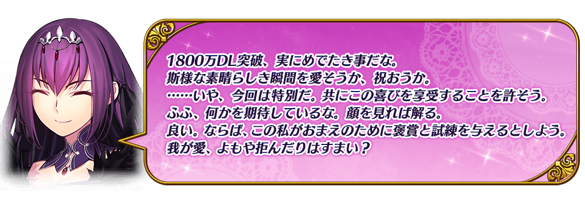
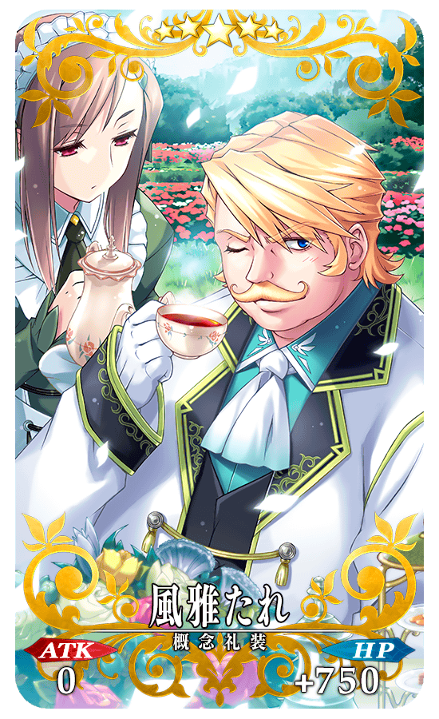
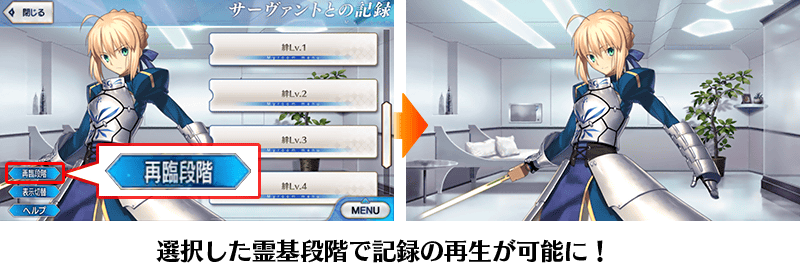
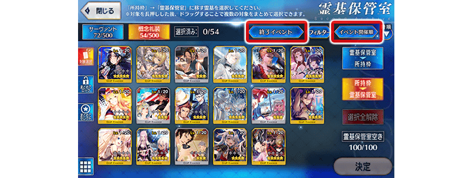

◆舉辦期間◆
2019年11月13日(三) 20:00～11月27日(三) 11:59
※本頁面皆為開發中圖片。會有與實際圖片相異的情況。
為了記念「1800萬DL突破宣傳活動」舉辦，實施特別連續登入獎勵。
在下述期間中，7天內連續登入的話，贈送睿智的猛火ALL★4(SR)10張、英靈結晶・星之芙芙ALL★3(HP)10張、英靈結晶・太陽之芙芙ALL★3(ATK)10張、呼符10張(聖晶石召喚最大11次份)等豪華報酬！
◆舉辦期間◆
2019年11月14日(四) 3:00～11月24日(日) 2:59
◆贈送對象◆
2019年11月23日(六) 2:59前通過「特異點F 炎上汙染都市 冬木」的御主對象
※上述時間前，在管理室(ターミナル)畫面的關卡橫幅必須要有「CLEAR」的文字顯示。
| 連續登入天數 | 贈送內容 | |
|---|---|---|
| 第1天 |

|
白銀果實 10個 |
| 第2天 |

|
黃金果實 10個 |
| 第3天 |

|
睿智的猛火ALL★4(SR) 10張 |
| 第4天 |

|
1,000萬QP |
| 第5天 |

|
英靈結晶・星之芙芙ALL★3(HP) 10張 |
| 第6天 |

|
英靈結晶・太陽之芙芙ALL★3(ATK) 10張 |
| 第7天 |

|
呼符 10張(聖晶石召喚最大11次份) |
※登入獎勵會在每天3:00配發。 ※連續登入天數中斷後，無法領取之後的禮物。 ※(聖晶石召喚最大11次份)限在同一個聖晶石召喚進行的情況。 ※最多能領取7次，但根據成為贈送對象的時間點，可能無法到此上限。
下述的期間中，在「御主任務」的「限定」標籤內以期間限定追加「【1800萬DL突破記念】任務」。
通過所有任務的話，可得到聖晶石30個(聖晶石召喚最大11次份)與睿智的猛火ALL★4(SR)20張、英靈結晶・流星之芙芙ALL★4(HP)1張、英靈結晶・日輪之芙芙ALL★4(ATK)1張！
◆舉辦期間◆
2019年11月13日(三) 20:00～11月27日(三) 11:59
◆領取期間◆
2019年11月13日(三) 20:00～12月4日(三) 11:59
◆追加任務◆
| 任務名稱 | 任務達成報酬 | |
|---|---|---|
| 【1800萬DL突破記念】 通過『Lostbelt No.1 第1節』 |

|
聖晶石 10個 |
|
|
睿智的猛火ALL★4(SR) 20張 | |
| 【1800萬DL突破記念】 通過『Lostbelt No.4 第1節』 |
|
聖晶石 20個 |

|
英靈結晶・流星之芙芙 ALL★4(HP) 1張 |
|

|
英靈結晶・日輪之芙芙 ALL★4(ATK) 1張 |
|
※請注意舉辦期間與領取期間有所差異。 ※請注意與每週日23:00更新的普通任務(Weekly)不同欄位，超過領取期間的話無法入手報酬。 ※就算已經通過主線關卡第2部 第1章 第1節、第4章 第1節的玩家，也能同様領取通過報酬。 ※就算達成「【1800萬DL突破記念】任務」，也不會計算在普通任務(Weekly)的任務進行度。 ※根據主線關卡的進行度會有無法達成「【1800萬DL突破記念】任務」的情況。
下述的期間中，在進行從者及概念禮裝的強化時，大成功(經驗值2倍加成)・極大成功(經驗值3倍加成)發生機率以期間限定變成2倍！
務必藉此機會強化中意的從者和概念禮裝吧！
◆舉辦期間◆
2019年11月13日(三) 20:00～11月27日(三) 11:59
下述的期間中，在強化從者及概念禮裝強化時所需的QP消耗量以期間限定變成1/2！
配合大成功・極大成功發生率2倍，別錯過這超值的機會！
◆舉辦期間◆
2019年11月13日(三) 20:00～11月27日(三) 11:59
※請注意從者技能強化、靈基再臨(從者進化)、絆等級上限開放、指令紋章刻印、指令卡強化、從者寶具強化、聖杯轉臨、靈衣開放為對象外。
2019年11月13日(三) 20:00以後，主線關卡第2部 第4章外再加上，第2部 第3章為止登場的所有NPC從者變得都裝備概念禮裝。
◆追加時間◆
2019年11月13日(三) 20:00～
◆對象關卡◆
主線關卡第1部(從特異點F到終局特異點)
主線關卡1.5部(從亞種特異點Ⅰ到亞種特異點Ⅳ)
主線關卡第2部(從序幕「序」到第3章)
※NPC從者裝備的概念禮裝由關卡決定，無法任意變更。 ※NPC從者裝備的概念禮裝只限「支援選擇」「隊伍確認」「配置變更」畫面中，可靠長按概念禮裝來確定詳情。 ※無法確認NPC從者的詳情。

下述的期間中，主線關卡第1部(從特異點F到終局特異點)與第2部(從第1章到第3章)的AP消耗量變成1/4、主線關卡第2部 第4章的AP消耗變成1/2(就算在戰鬥中撤退的情況也是同様消耗量)。
尚未通過主線關卡的御主，請務必活用此機會！
預定2019年12月配信的主線關卡第2部 第5章「Lostbelt No.5 神代巨神海洋 亞特蘭提斯 擊落神之日」開放條件為通過第2部 第4章「Lostbelt No.4 創世滅亡輪廻 宇迦淨土 黑色最終之神」。請務必藉此機會推進主線關卡的攻略！
◆舉辦期間◆
2019年11月13日(三) 20:00～12月31日(二) 22:59
◆對象關卡◆
・AP消耗1/4
主線關卡第1部(從特異點F到終局特異點)
主線關卡第2部(從第1章到第3章)
・AP消耗1/2
主線關卡第2部(第4章)
※現在主線關卡第2部 第3章以前的AP消耗量為永久變成1/2的狀態。因此、宣傳活動結束後，該主線關卡的AP消耗量會是1/2。 ※請注意1.5部、自由關卡為對象外。
為了記念「1800萬DL突破宣傳活動」舉辦，以期間限定在達文西工房的「魔力稜鏡交換」追加下述的概念禮裝。
◆概念禮裝交換期間◆
2019年11月13日(三) 20:00～2020年1月31日(五) 22:59
|
★★★★★SSR |
| 追加道具 | 能交換次數 | 1次交換所需 魔力稜鏡數 |
|---|---|---|
| 【期間限定】 カルデア・ディナータイム |
5次 | 1000個 |

為了記念「1800萬DL突破宣傳活動」舉辦，在達文西工房的「稀有稜鏡交換」追加『魔力稜鏡交換「風雅たれ」』。
『魔力稜鏡交換「風雅たれ」』為在「魔力稜鏡交換」開放「★5(SSR)風雅たれ」的權利，關於實際交換1次需要魔力稜鏡1000個。
◆追加時間◆
2019年11月13日(三) 20:00～
|  |
★★★★★SSR |
◆追加道具(常駐)◆
魔力稜鏡交換「風雅たれ」
| 追加道具 | 能交換次數 | 1次交換所需 稀有稜鏡數 |
|---|---|---|
| 魔力稜鏡交換「風雅たれ」 | 1次 | 1個 |
※在「稀有稜鏡交換」的『魔力稜鏡交換「風雅たれ」』做為常駐，沒有交換期限。 ※已經交換5張「★5(SSR)風雅たれ」的玩家，無法交換『魔力稜鏡交換「風雅たれ」』。 ※已經交換1～4張「★5(SSR)風雅たれ」的玩家，只會開放未交換份。不管能交換張數，所需的稀有稜鏡的交換數不會改變(已經交換4張的情況只會開放1張份)。
自2019年11月13日(三) 17:00，在起跑衝刺宣傳活動的登入獎勵，以期間限定追加特別獎勵！
下述期間中，第7天的獎勵變成2倍，以期間限定追加聖晶石召喚最多22次份的聖晶石30個與呼符10張等。
※(聖晶石召喚最大22次份)限在同一個聖晶石召喚進行的情況。
◆舉辦期間◆
2019年11月13日(三) 17:00～11月24日(日) 2:59
■起跑衝刺宣傳活動登入獎勵的內容
| 總登入天數 | 入手登入獎勵 |
|---|---|
| 第1天 |
聖晶石 2個 呼符 5張 友情點數 2,000pt 10萬QP 睿智的猛火ALL★4(SR) 20張 黃金果實 1個 |
| 第2天 |
聖晶石 3個 呼符 5張 友情點數 2,000pt 10萬QP 睿智的猛火ALL★4(SR) 20張 黃金果實 1個 |
| 第3天 |
聖晶石 5個 呼符 5張 友情點數 2,000pt 10萬QP 睿智的猛火ALL★4(SR) 20張 黃金果實 1個 |
| 第4天 |
聖晶石 7個 友情點數 2,000pt 10萬QP 睿智的猛火ALL★4(SR) 20張 黃金果實 1個 |
| 第5天 |
聖晶石 10個 友情點數 2,000pt 10萬QP 睿智的猛火ALL★4(SR) 20張 黃金果實 1個 |
| 第6天 |
聖晶石 15個 友情點數 2,000pt 10萬QP 睿智的猛火ALL★4(SR) 20張 黃金果實 1個 |
| 第7天 |
【期間限定增量】 聖晶石 60個 呼符 20張 友情點數 4,000pt 200萬QP 睿智的猛火ALL★4(SR) 40張 黃金果實 20個 |
| 第8天 |
聖晶石 5個 友情點數 2,000pt 10萬QP 睿智的猛火ALL★4(SR) 20張 黃金果實 1個 |
| 第9天 |
聖晶石 7個 友情點數 2,000pt 10萬QP 睿智的猛火ALL★4(SR) 20張 黃金果實 1個 |
| 第10天 |
聖晶石 9個 友情點數 2,000pt 10萬QP 睿智的猛火ALL★4(SR) 20張 黃金果實 1個 |
| 第11天 |
聖晶石 12個 友情點數 2,000pt 10萬QP 睿智的猛火ALL★4(SR) 20張 黃金果實 1個 |
| 第12天 |
聖晶石 15個 友情點數 2,000pt 10萬QP 睿智的猛火ALL★4(SR) 20張 黃金果實 1個 |
| 第13天 |
聖晶石 25個 友情點數 2,000pt 10萬QP 睿智的猛火ALL★4(SR) 20張 黃金果實 1個 |
| 第14天 |
聖晶石 50個 呼符 10張 友情點數 2,000pt 100萬QP 睿智的猛火ALL★4(SR) 20張 黃金果實 10個 |
※登入獎勵會在每天3:00配發。 ※表格中的紅字為期間限定的特別獎勵。 ※在舉辦期間內未進行第7天登入的情況，無法領取2倍的獎勵。
對一定期間未登入的Master對象，以期間限定舉辦「回歸連續登入獎勵」。
在下述期間中，7天內連續登入的話，贈送聖晶石30個(聖晶石召喚最大11次份)的聖晶石與對從者的養成有用的各種道具！
※(聖晶石召喚最大11次份)限在同一個聖晶石召喚進行的情況。
◆舉辦期間◆
2019年11月13日(三) 17:00～11月24日(日) 2:59
※期間內未登入的話無法領取。
◆贈送對象◆
滿足以下所有條件的御主對象
・2019年9月30日(一) 23:00～11月13日(三) 17:59的期間未進行登入
・在2019年11月23日(六) 2:59通過「特異點F 炎上汙染都市 冬木」
※上述時間前，在管理室(ターミナル)畫面的關卡橫幅必須要有「CLEAR」的文字顯示。
【回歸連續登入獎勵合計】
・聖晶石 30個(聖晶石召喚最大11次份)
・友情點數 合計14,000pt(友情點數召喚70次份)
・睿智的猛火ALL★4(SR) 16張
・黃金果實 16個
■回歸連續登入獎勵的內容
| 連續登入天數 | 贈送內容 |
|---|---|
| 第1天 |
聖晶石 1個 友情點數 2,000pt 睿智的猛火ALL★4(SR) 1張 黃金果實 1個 |
| 第2天 |
聖晶石 1個 友情點數 2,000pt 睿智的猛火ALL★4(SR) 1張 黃金果實 1個 |
| 第3天 |
聖晶石 2個 友情點數 2,000pt 睿智的猛火ALL★4(SR) 1張 黃金果實 1個 |
| 第4天 |
聖晶石 3個 友情點數 2,000pt 睿智的猛火ALL★4(SR) 1張 黃金果實 1個 |
| 第5天 |
聖晶石 5個 友情點數 2,000pt 睿智的猛火ALL★4(SR) 1張 黃金果實 1個 |
| 第6天 |
聖晶石 8個 友情點數 2,000pt 睿智的猛火ALL★4(SR) 1張 黃金果實 1個 |
| 第7天 |
聖晶石 10個 友情點數 2,000pt 睿智的猛火ALL★4(SR) 10張 黃金果實 10個 |
※第1天的回歸登入獎勵會在11月13日(三) 17:00以後配發。 ※之後的的回歸登入獎勵會在每天3:00配發。 ※連續登入天數中斷的話，無法領取之後的禮物。 ※最多能領取7次，但根據開始遊戲的時間點，可能無法到此上限。
介紹在2019年11月13日(三)的更新追加的新功能。
◆追加時間◆
2019年11月13日(三) 17:00～
「與從者的記錄」中，記錄的播放修改成會反映靈基階段的設定
在個人空間(マイルーム)「與從者的記錄」選擇從者時，變更成可依選擇從者的靈基階段來確認記錄。
請選擇任意的再臨階段後再選擇記錄。
※一部份的記錄只限特定的靈基階段能夠確認。

在靈基保管室追加「結束活動」篩選器
於靈基保管室為了讓更容易整理概念禮裝，在篩選器追加「結束活動」，在排序追加「活動舉辦順」。
使用「結束活動」篩選器，在活動結束後將概念禮裝移動的情況等會有所幫助。
※宣傳活動中入手的等一部份的概念禮裝為「結束活動」篩選器的對象外。

最佳化初次啟動遊戲時的下載容量
為了更容易開始遊戲，最佳化初次啟動遊戲時的下載容量。
其他還有，期間限定「1800萬DL記念Pick Up召喚」和『TV動畫「Fate/Grand Order -絕對魔獸戰線巴比倫尼亞-」放送記念宣傳活動 第2彈』同時舉辦！
關於詳情，請自下述橫幅確認。
■「1800萬DL記念Pick Up召喚」詳細情報

■TV動畫「Fate/Grand Order -絕對魔獸戰線巴比倫尼亞-」放送記念宣傳活動 第2彈詳細情報